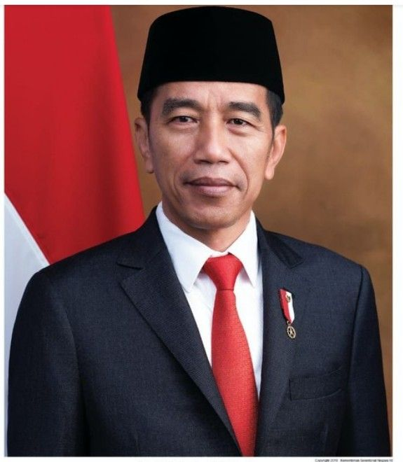
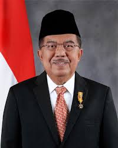

Sistem Politik Pemerintahan Presiden Joko Widodo & Jusuf Kalla (2014-2019)


Pemerintahan Joko Widodo & Jusuf Kalla (2014-2019) menggunakan sistem politik demokrasi presidensial
yang berbasis pada Pancasila dan UUD 1945. Sistem ini menempatkan presiden sebagai kepala pemerintahan
dan kepala negara, dengan kekuasaan eksekutif yang dijalankan berdasarkan prinsip pemisahan kekuasaan
(executive, legislative, dan judicial).
Beberapa poin utama dalam sistem politik mereka:
- Demokrasi Presidensial: Presiden sebagai kepala pemerintahan dan negara.
- Koalisi yang Dinamis: Awalnya terbatas, tetapi semakin kuat dengan masuknya beberapa partai oposisi.
- Pembangunan Berbasis Pancasila: Fokus pada kesejahteraan sosial dan keadilan ekonomi.
- Tantangan dari Oposisi & Politik Identitas: Terutama dalam isu agama dan kebijakan hukum.
 ← Kembali
← Kembali